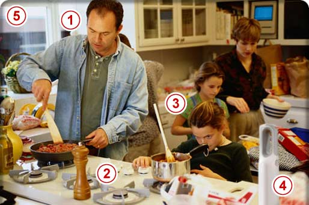

HomeHero At Hand for Peace of Mind™
My Home Safety
The Kitchen
As the kitchen remains one of the most diverse rooms in the house, so too are its hazards. Unattended cooking is the leading cause of fire in American homes today. However, grease and other flammable materials coming in contact with stove burners and overloaded electrical outlets are a few other common hazards.
- Cooking with gas
- Wood and plastic utensils
- Children in the kitchen
- Fire extinguisher
- Smoke detectors
- Have you considered...
- Cooking with gas is cooking with fire, so be careful not to expose your clothing to a lighted burner. Keep a close watch on what’s on the stove and in the oven. Also keep a fire extinguisher close at hand.
- We are reminded by safety experts that wood and plastic utensils, plastic containers and food packaging are some of the items to keep at a safe distance from burners and oven surfaces. Fire safety prevention reminds us that pilot lights are also dangerous. They can pose a threat to anything being stored inside the oven, even if it's not on.
- We should always have children watch and work away from the immediate cooking areas. When they are learning to cook, keep a close watch on them and be sure they are aware of the hazards of fire when cooking. Fire safety education can to teach them how to handle simple cooking fires by covering pans, and properly using a fire extinguisher.
- With the high risk of a cooking fire in the kitchen, a fire extinguisher kept close at hand is a good investment. An A/B/C fire extinguisher may not be as effective in a kitchen as a B/C fire extinguisher. Make sure everyone in your family knows how to use it. Don’t let a simple mishap become a disaster.
- Smoke and carbon monoxide detectors should always be in a kitchen area. Placement however is important as you do not want it directly over a stove or other heat producing unit that can cause false alarms. Learn proper placement of the smoke and carbon monoxide detector from fire safety authorities.
- Cooking with gas
- Wood and plastic utensils
- Children in the kitchen
- Fire extinguisher
- Smoke detectors
